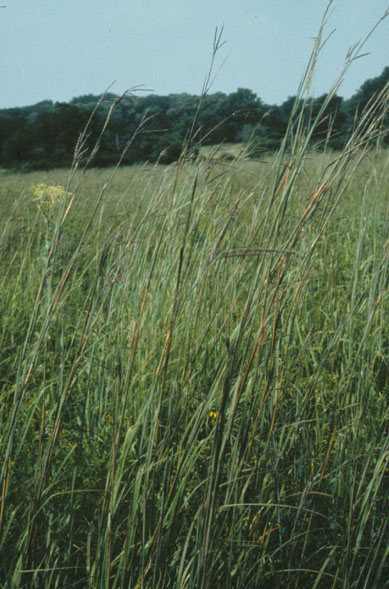
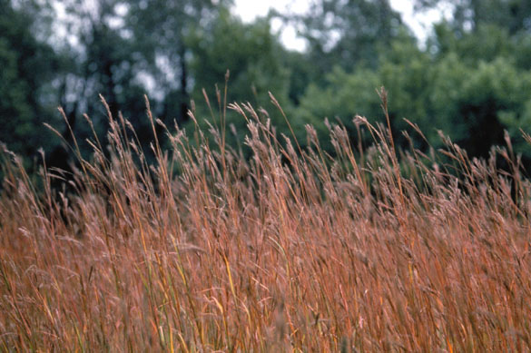
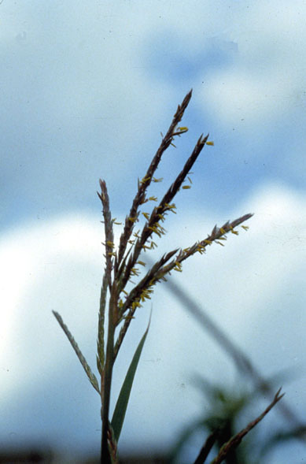
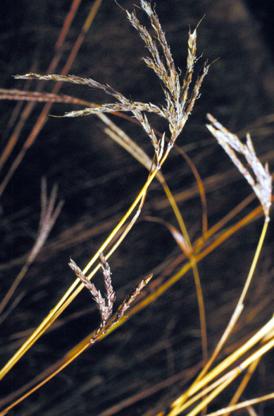
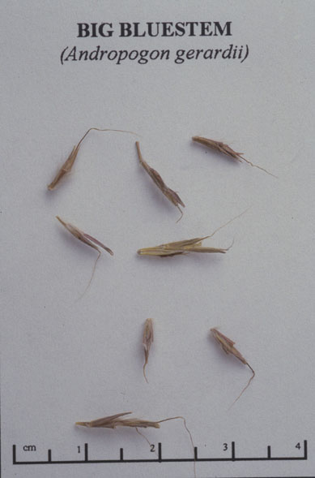

Andropogon gerardii
Family: Poaceae
Big Bluestem
Swink/Wilhelm #5




FLOWERING: July to September.
SEED TIMING: Mid-September to mid-November.
HABITAT: Dry, mesic, and moist prairie.
DIAGNOSTIC FEATURES: Tall grass to 6 feet or more, often growing in dense clumps or tufts. Seed panicle resembles a turkey’s foot with 3 to 5 digits. Reddish blue stem; arching leaf blades in dense clumps have reddish edge. Spreads through underground stems or rhizomes as well as by seed. Lower sheath and leaves of young plants have silky hairs and young shoots are somewhat flattened.
TO PICK: Seed should be a shiny mahogany brown and pull easily off the stalk when stripped. Apply a little more pressure than with Indian grass.